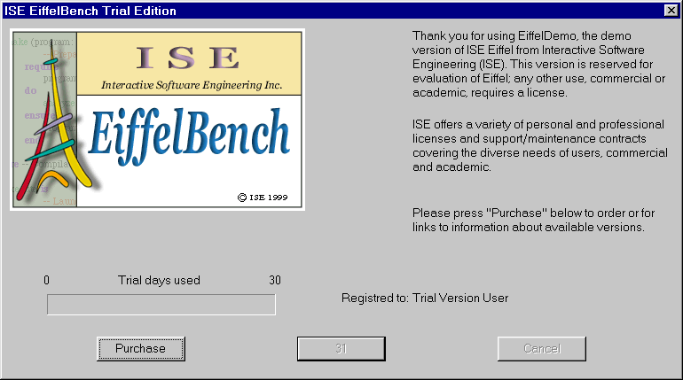
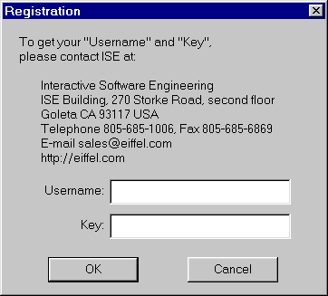

Installing ISE Eiffel
Insert the CD labeled ISE Eiffel 4.5 into your CD-ROM drive and if you have
the `auto-run' setup enabled, it will launch the installation of the ISE Eiffel
environment automatically. If not, choose `setup.exe' located in `d:\' if `d:\'
is your CD-ROM location. For Windows NT/2000 users, please read the section
below for a specific step by step procedure needed before proceeding to the
installation.
After the welcome screen displayed in the installation wizard, you will be
prompted to enter your CD-Key located at the back of your CD cover.
Then, you will be prompted to choose the installation directory. By default,
`C:\Eiffel45' is chosen, you can choose any other directory, but we recommend to use a directory without any white space in it, due to some possible
errors during the C compilation if your C compiler does not handle white space
correctly.
After that you will have the choice to specify what C compiler you are going
to use. The default entry is Microsoft Visual C++ C compiler, but you can also
choose Borland C++ or No C compiler if you don't have one.
The next screen you will get is a prompt regarding the type of installation
you are going to choose. For a first setup, we recommend you to choose
`Typical', this will install all the software components, libraries and precompiled
libraries which come with your purchased product.
Then follow the instructions which appear on your screen until installation
completion. When it is finished, some shortcuts will appear on your desktop and
an entry for ISE Eiffel will be added to your start menu.
On Windows 95/98 you will be asked to reboot your machine, because the setup
will modify your Autoexec.bat in order to put some environment variables.
Modifications of the Autoexec.bat file are taken into account only after a
reboot.
|
When Installing ISE Eiffel on a Windows NT/2000 you need to install it
with an account that has administrator privileges. When the
installation is finished, you will be able to use ISE Eiffel with
this account only. If you want to use ISE Eiffel with a different user
account, you need to log on as the specific user account after the
completion of the installation procedure and to use the tool called `user_setup.exe'
located in the root directory of your CD. Follow the instructions given by
the tool to complete your user specific installation. After that you will
be ready to run ISE Eiffel products smoothly.
|
Launching ISE Eiffel for the first time
Launch ISE Eiffel by choosing the entry EiffelBench from your Start Menu or
from the shortcut located on your desktop. The first time you will launch ISE Eiffel you will see the following screen
used to ask you to enter your personnal identification license code:

When receiving the CD you should have received at the same time a username
and a key. To enter them, simply click the `Purchase' button a screen will
appear with two edit fields where you can put your username and your key:

After entering them, you should be able to run ISE EiffelBench.
The same process is required for ISE EiffelCase.
After registering your product, you are ready to enjoy Eiffel.
Installing the files
The installation of the files are done simply by copying the files from the delivery medium to the hard disk, for example, to directory
/usr/local/Eiffel4xx, where `xx' represents the version number (e.g. if you have
the 4.5 version, it will be Eiffel45).
If you have a directory called Eiffelxx on CD-ROM, you can either copy the whole directory
Eiffelxx to your hard disk or run directly from the CD-ROM.
To copy the files, mount your cd-rom drive. For example,
mount /mnt/cdrom
Then do the copy. For example,
cp -r /mnt/cdrom/Eiffelxx /usr/local/
If the delivery medium is a gzipped tar file, you need to untar the file to the desired location. For example,
cd /usr/local
gunzip -c _delivery_file.tar.gz | tar xvf -
Setting the environment variables
Set environment variable EIFFEL5 to the Eiffelxx directory you want to run
Eiffel from. This directory can be on your hard disk (for example /usr/local/Eiffelxx) or on CD-ROM.
Set your PLATFORM environment variable to specify you platform. Click
here to know what the value of PLATFORM
should be for your particular platform.
Add the following directory to your path: $EIFFEL5/bench/spec/$PLATFORM/bin.
If you chose to run Eiffel from the CD-ROM you have to copy the directory Eiffel4/install to you hard disk and set environment variable
EIF_LICENSE to point there.
If you are evaluating Eiffel for a trial period or if you have purchased a multi-user license,
go directly to the next chapter.
If you have purchased an individual license of Eiffel, add at the beginning
of the license file the User-key code that you should have received with your
purchase. The license file is either $EIFFEL5/install/limand/dhost (if you run Eiffel from your hard
disk) or $EIF_LICENSE/limand/dhost (if you run Eiffel from the CD-ROM).
When done go to the last section to learn how to launch EiffelBench.
Note: The User-key is independent from
the IP address. No `eifdaemon' or `eifid' is required.
If you have purchased an individual license of Eiffel, go directly to
the previoust chapter.
If you are evaluating Eiffel for a trial period or if you have purchased a multi-user license, you need to follow the instruction above to set
the license manager up.
Run the command `eifid' and send the output to register@eiffel.com.
If you have problems running `eifid', for example, error message saying
invalid hostname, check that your hostname and network is set up correctly.
|
The name of your host must not be localhost! If it is, change it in the
file /etc/HOSTNAME and run hostname -F /etc/HOSTNAME. Even if your machine
is not on a network, a minimum configuration of the network is required (looback device in particular). |
We will send you registration keys for the products you have purchased. The keys should be put at the end of the file
$EIFFEL5/install/registration if you run Eiffel from your hard disk, or $EIF_LICENSE/registration if you run Eiffel from a CD-ROM. After
that you should run the command `eiflicense', which will install the license
keys.
Then edit the file $EIFFEL5/install/limand/dhost or $EIF_LICENSE/limand/dhost
and enter the host name of the machine used when generating the `eifid'.
For example, one can do:
% hostname > dhost
Run the license manager in the background:
% eifdaemon &
Or better:
% (nohup eifdaemon &)
Or, if you want a log of the connections to eifdaemon:
% (nohup eifdaemon -l &)
When you are done with this sequence, you are ready to launch our
products.
For later: if you turn off the machine, you will need to restart eifdaemon when you turn it back on. To avoid having to restart eifdaemon manually, you
may consider putting a call to that command in the boot scripts for your machine.
Note: They rely on the IP address of the
host, where `eifdaemon' is running. The `eifdaemon' must run in
background on the host, which `eifid' is used to generate the license keys. The
license key is an encrypted code and it can also be used to grant temporary
license.
|
Linux
|
On Linux, the license manager is kernel dependent.
Make sure you read the section about setting your PLATFORM variable. If
you still cannot use the license manager, it is recommended to run the `eifdaemon'
on another Unix platform, on which the `eifdaemon' is more stable
(Solaris for instance). Otherwise, you can ask ISE for providing you with
a temporary license key, which is kernel independent or a User-key (for
Eiffelbench and Eiffelcase only) |
To be completed soon.
|